Museu do Futebol: Pacaembu Stadium opened in 1940 in Art Deco style; since 2008 the Football Museum has been housed beneath its stands. Pelé, holograms, old team photos – and as Germans we naturally linger over the pictures from 1954 and 2014. The square in front is named after Charles Miller, who brought the first footballs and rules from England to Brazil in 1894.
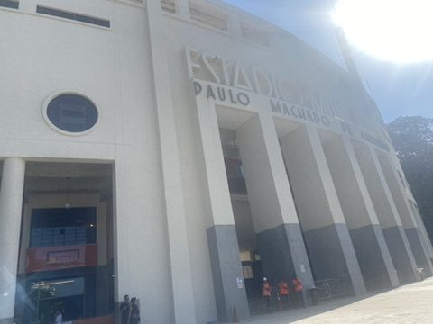
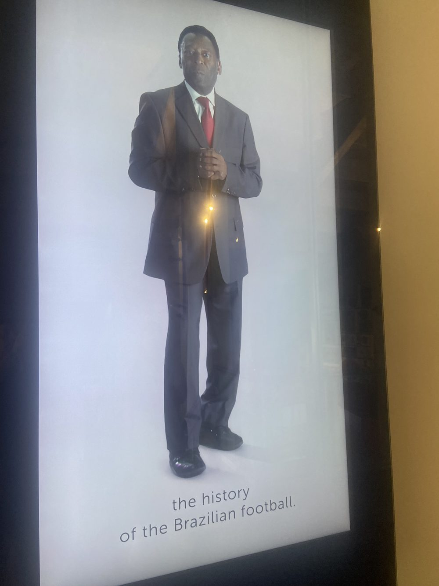
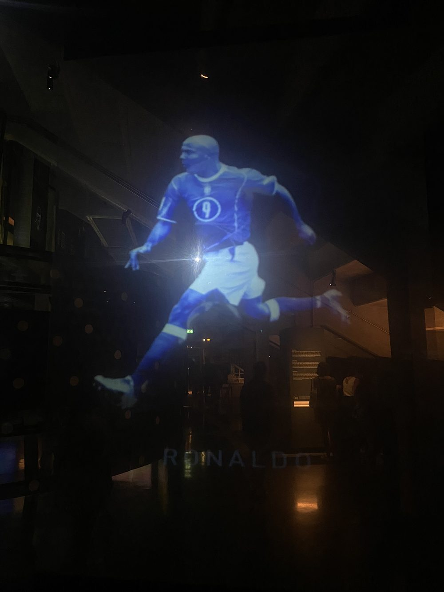
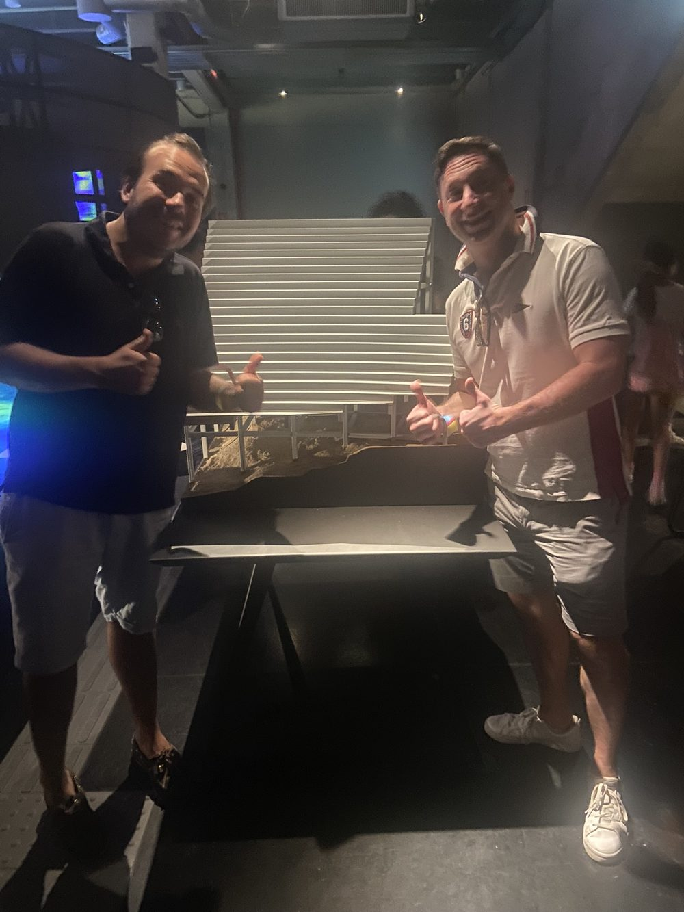
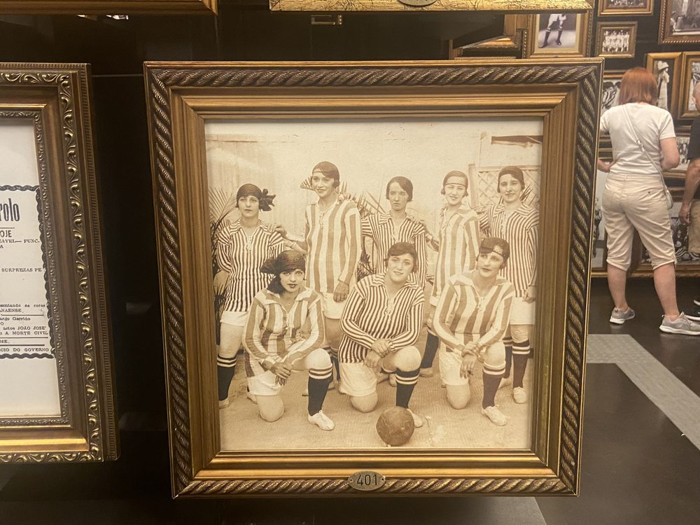
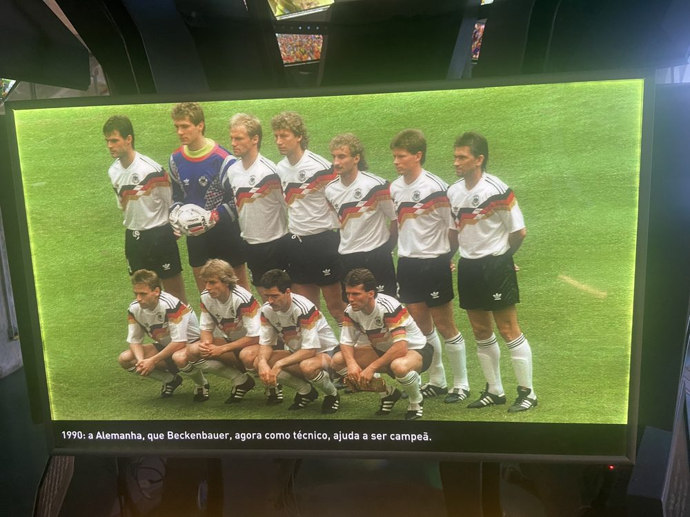
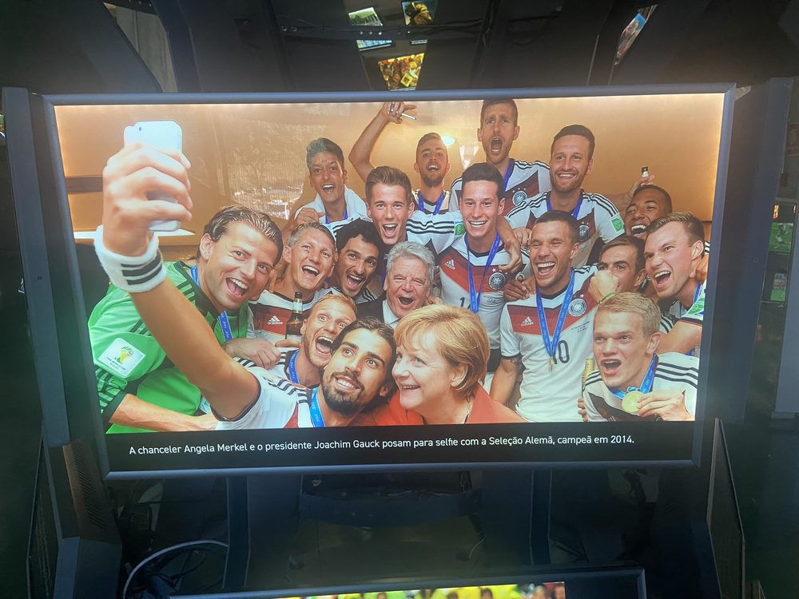
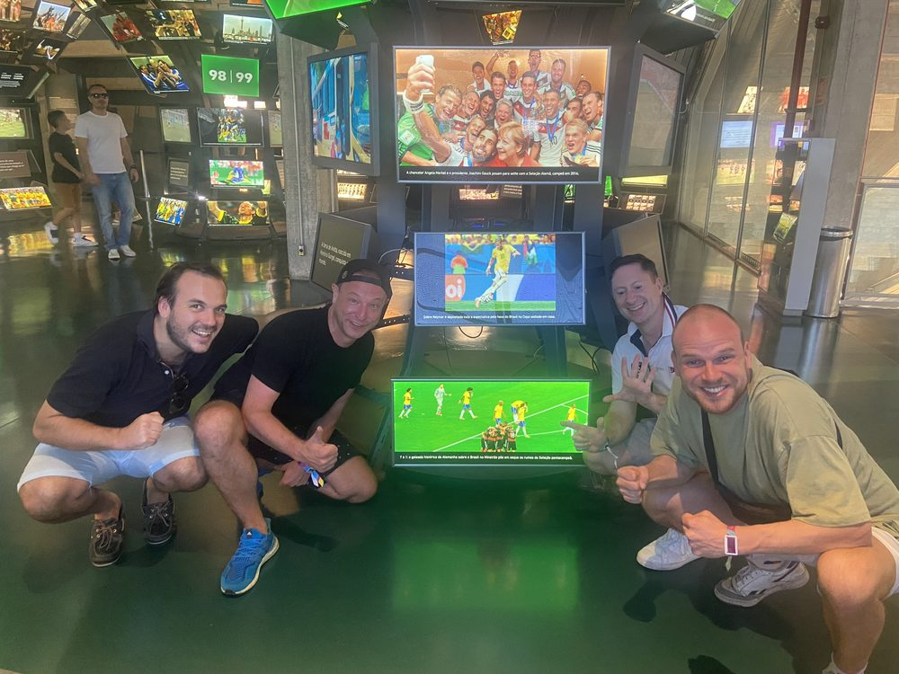
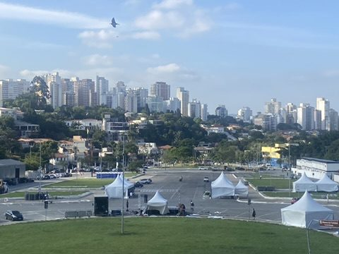
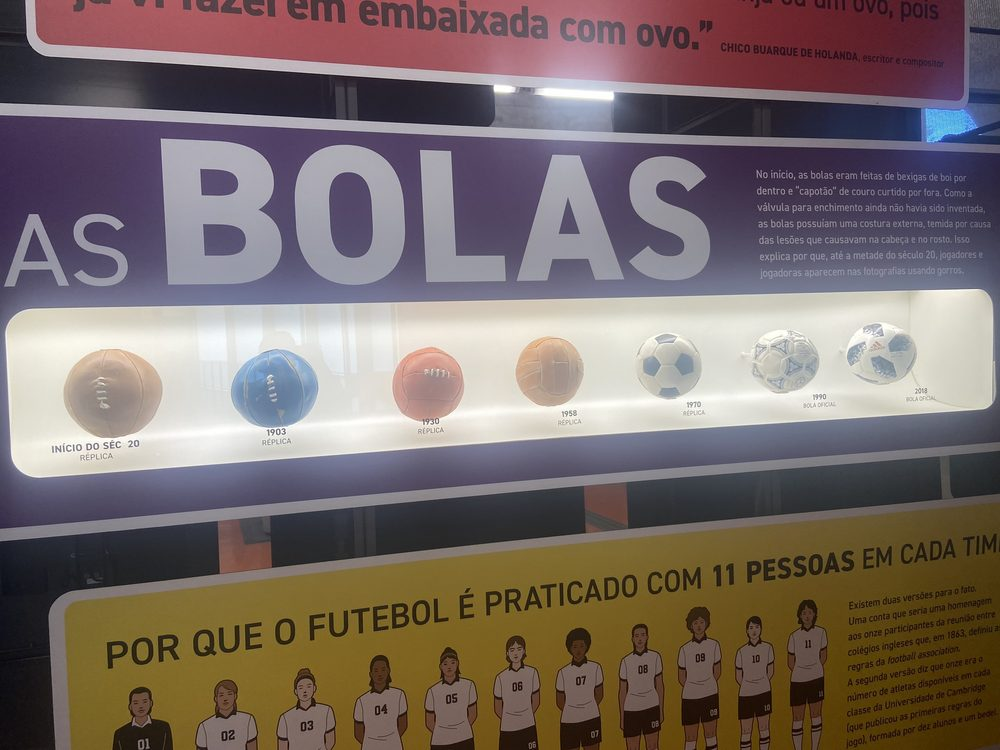
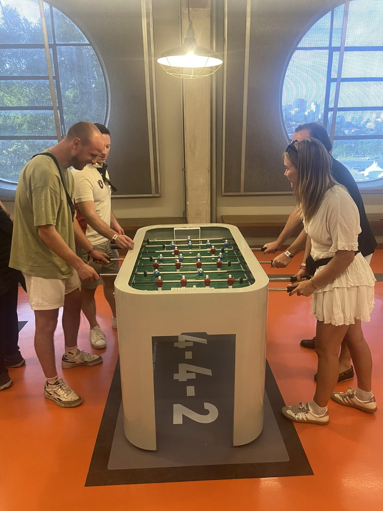
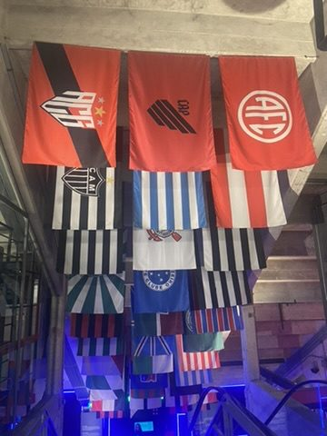
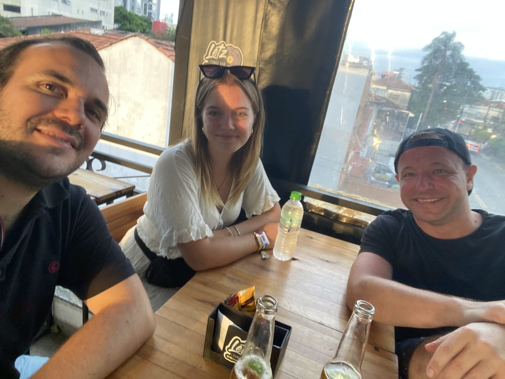
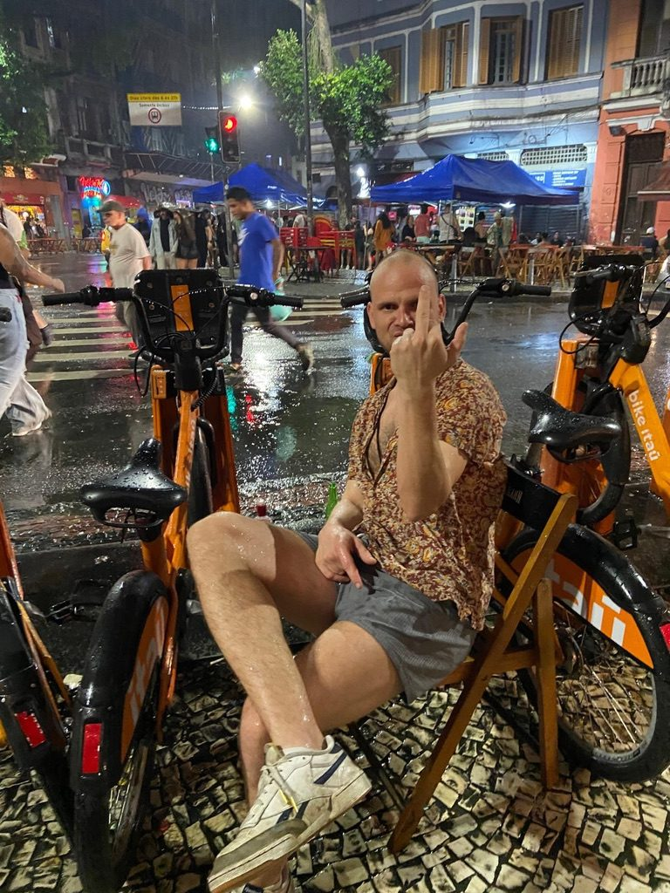